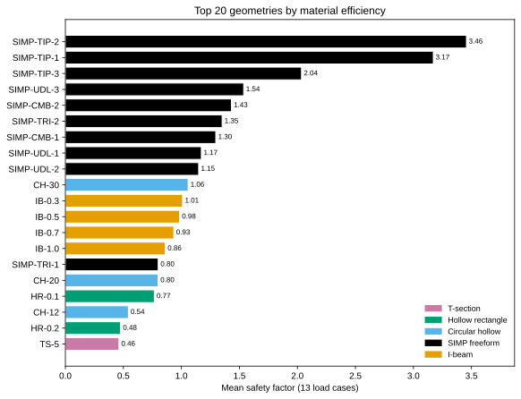
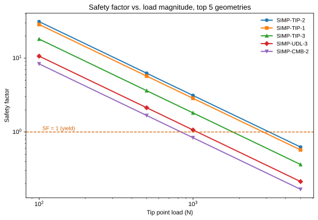
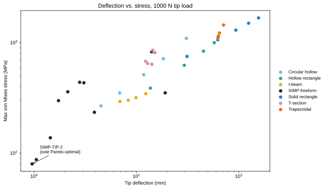
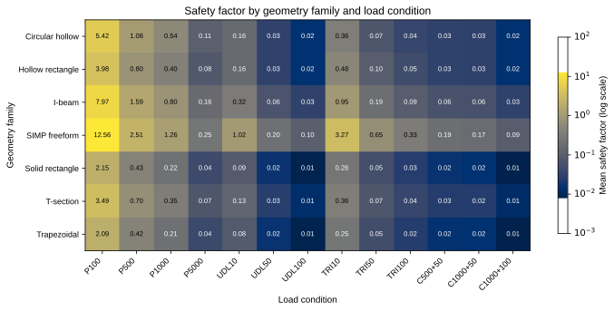
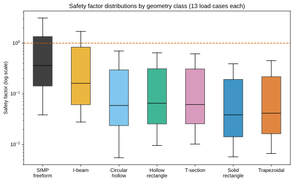
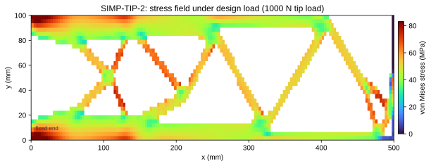
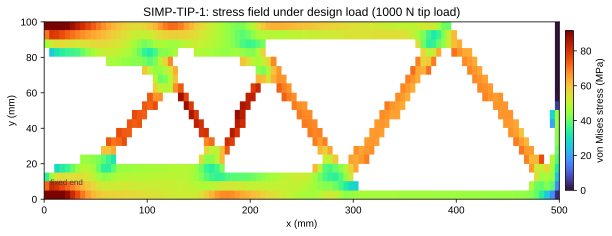
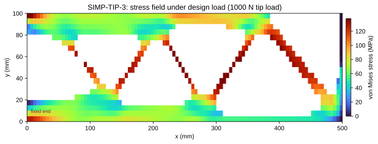
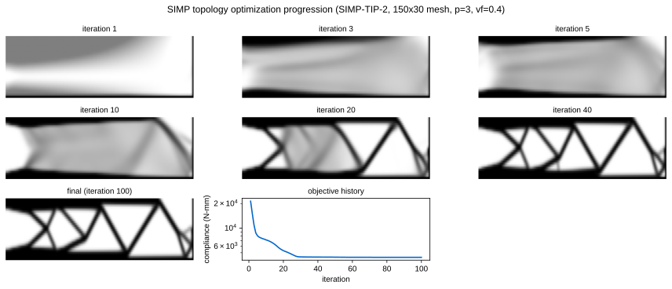

This study computationally evaluated 38 beam geometries (28 prismatic cross-sections across six classical families and 10 freeform geometries from SIMP topology optimization), evaluated under 13 load conditions, for 494 geometry-load combinations at identical material volume (100 cm³ structural steel) and length (500 mm). SIMP-optimized geometries occupied the top nine ranking positions; the best design (SIMP-TIP-2) achieved a mean safety factor of 3.46, 227% higher than the best prismatic section (thin-walled circular hollow, 1.06), and was the sole Pareto-optimal geometry under the 1000 N reference load (80.0 MPa, 0.96 mm). Among prismatic families, I-beams were most efficient under distributed loading while thin-walled circular hollow sections dominated under point loading.
38 geometries · 13 load conditions · 494 simulations · iso-volume (100 cm³ structural steel, 500 mm span) · Euler-Bernoulli + thin-walled shear theory · SIMP topology optimization (p=3, volume fraction 0.4)
Cross-section (to scale)


The full 494-row dataset is open to you. Ask for the data or anything else by email and I will send it over.
28 prismatic cross-sections across six classical families (solid rectangle, I-beam, hollow rectangle, T-section, trapezoidal, circular hollow), each sized to exactly 200 mm² of cross-section area. Section properties are computed by numerical strip integration and validated against closed-form formulas to better than 0.05% error.
Ten additional geometries are generated by SIMP topology optimization: a 500×100 mm design domain is meshed into finite elements whose densities are design variables. Penalization (p=3) drives the design to a black-and-white structure; a density filter enforces minimum feature size; an optimality-criteria update minimizes compliance under a 40% volume constraint.
Each of the 38 geometries is evaluated under 13 load conditions: point loads at the tip (100-5000 N), uniformly distributed loads, triangular distributed loads, and combined tip-plus-distributed cases. Prismatic sections are analyzed with Euler-Bernoulli beam theory plus thin-walled shear; SIMP designs by plane-stress finite element analysis.
Every design uses exactly 100 cm³ of structural steel over a 500 mm span, so performance differences are attributable to geometry alone. Seven metrics per combination (stress, deflection, safety factor, efficiency, uniformity, mass, moment of inertia) fill a 494-row dataset with zero missing values.






Each freeform geometry was produced by Solid Isotropic Material with Penalization (SIMP): the 500×100 mm design domain is discretized into quadrilateral plane-stress finite elements whose densities are design variables. Element stiffness scales with density cubed (p=3), which drives the design toward a black-and-white structure; a density filter (r=1.5-3 elements) enforces a minimum feature size; an optimality-criteria update iterates until the compliance (F·u) is minimized subject to a 40% volume constraint. A one-element passive solid skin along the top and right edges guarantees well-posed load introduction for every load case. The converged 2D topology is extruded to ≈5 mm thickness so total volume equals 100 cm³, then evaluated under all 13 load cases by FEA.
The progression below shows the density field evolving from a uniform gray start to the classical truss-like cantilever: material migrates to the top and bottom chords and diagonal web members, converting bending into axial strut action - the mechanism behind the 227% efficiency gain.

This study ran 494 controlled simulations at equal material use and found that topology-optimized freeform designs beat every hand-designed beam section, with the best geometry reaching a mean safety factor of 3.46, up to 227% above the best classical cross-section. The write-up, dataset, and figures are all available.
Figures: graph1-graph7 (.svg + .png) are available alongside this file. The full computational record is in execution_trace/worker-0.ipynb.
Extended methodological notes, validation detail, the full discussion of scope, and collaboration inquiries are available directly from the author. If this study raises questions for your own work, or you would like the complete write-up of any part of the pipeline, please get in touch by email.
Email the researcher